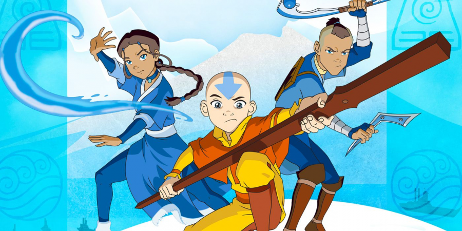

About Aang
Aang is the last surviving Airbender, a monk of the Air Nomads' Southern Air Temple.He is an incarnation of the "Avatar", the spirit of light and peace manifested in human form. As the Avatar, Aang controls all four elements (water, earth, fire, and air) and is tasked with keeping the Four Nations at peace. At 12 years old, Aang is the series' reluctant hero, spending a century in suspended animation in an iceberg before joining new friends Katara and Sokka on a quest to master the elements and save their world from the imperialist Fire Nation.
Aang and his best friends : Soraka and Katara (taking names and kicking ass)
5 reasons Aang is the best hero of our chilhood
Who are his friends ?
Aang has some great friends. Their friendship is so strong that they were able to defeat the Fire Nation and save the world. Aang friends are very interesting, one of them is blind, another one was his ennemy at first and one is a flying bison